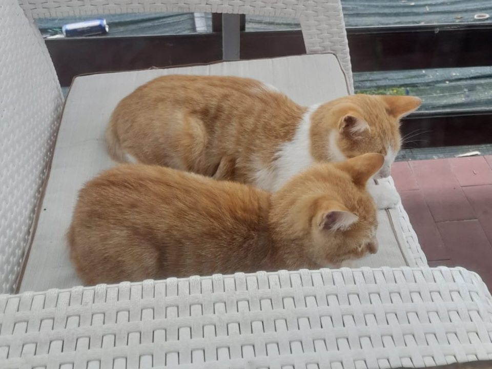
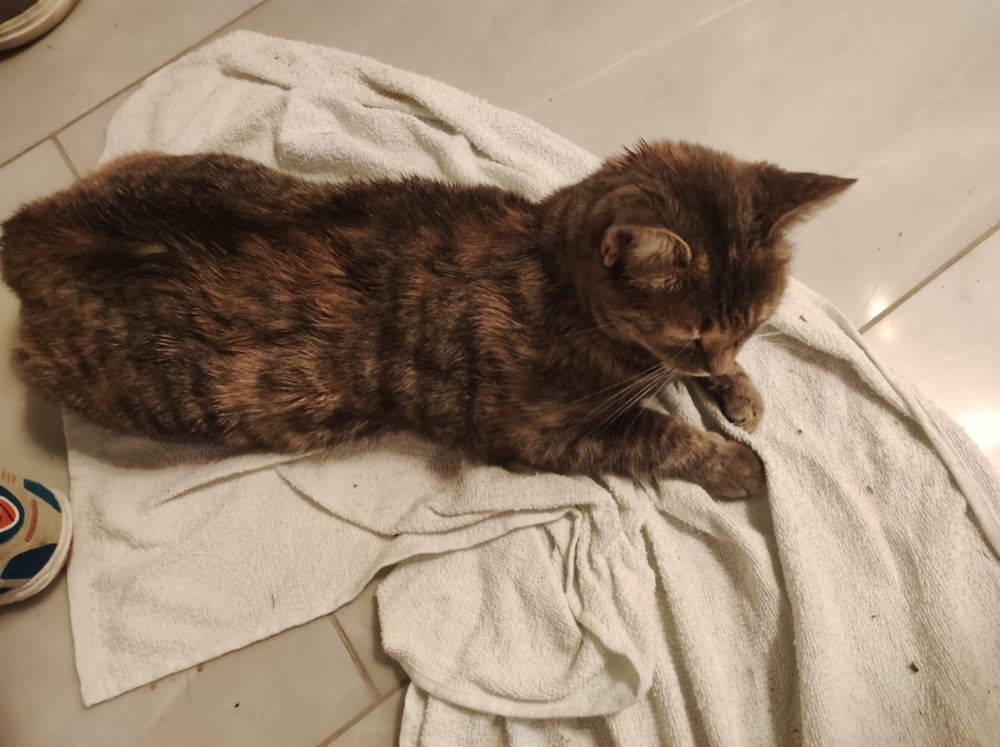
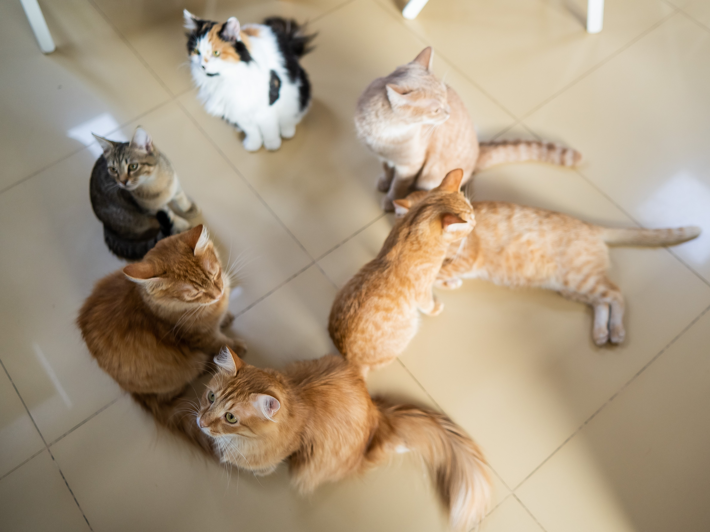

Our story 
In the picturesque coastal town of Novalja, nestled near the sparkling sea, there lived two sisters, Maria and Jana Jovanovac. Bound by a deep love for cats and a shared dream, they embarked on a journey to create something truly magical: Cat Cafe Mjau. With hearts brimming with enthusiasm, Maria and Jana set out to establish a haven for cat lovers and coffee aficionados alike. Their inspiration came from their beloved orange cats, Simba and Lucky, who brought joy and companionship to their lives. The sisters knew that they wanted to create a place where others could experience the same warmth and happiness in the presence of these amazing creatures.
In June 2020, Mjau Cat Cafe opened its doors for the first time. Nestled in the heart of Novalja, just a stone's throw away from the shimmering sea, it became an oasis of tranquility and purrs. The cafe itself embodied the coastal charm, with soft colors reminiscent of sunsets and a cozy atmosphere that mirrored the nearby beaches.
Simba and Lucky, the official mascots of Mjau, greeted visitors with their playful antics and gentle purrs. Each had their own unique personality: Simba, the adventurous explorer, and Lucky, the mischievous charmer. Together, they captivated the hearts of all who crossed their path.
Mjau Cat Cafe quickly became a community favorite. Locals and tourists alike flocked to the cafe, drawn by the irresistible combination of delightful feline companions and aromatic coffee. The soothing sound of waves crashing against the shore provided a serene backdrop to heartfelt conversations and moments of relaxation.

Maria and Jana's passion extended beyond providing a delightful experience. They partnered with local animal shelters and rescue organizations, offering a safe haven for cats in need of forever homes. Mjau became a temporary refuge, where these precious felines could regain their trust in humanity and form lasting connections with visitors who were seeking companionship.
The sisters' dedication to the welfare of cats extended beyond the cafe's walls. They organized adoption drives and fundraising events, creating opportunities for the community to contribute to the well-being of these amazing creatures. Mjau Cat Cafe became a hub of compassion and awareness, inspiring others to make a difference in the lives of animals.
As the years passed, Mjau Cat Cafe continued to flourish, leaving an indelible mark on the hearts of all who visited. Maria and Jana remained steadfast in their mission, sharing their love for cats and fostering a sense of togetherness within the community.

Today, as the sun sets over the azure waters of Novalja, the laughter and purrs from Mjau Cat Cafe continue to echo. It stands as a testament to the unbreakable bond between humans and their feline companions, a place where love, joy, and the gentle rhythm of the sea converge.
Mjau Cat Cafe remains a cherished destination, where the warm embrace of a coffee cup and the soft touch of a furry friend create moments that will be treasured forever.